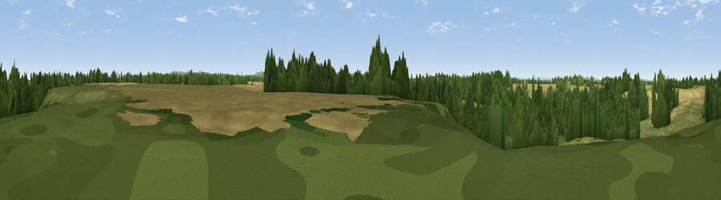

Hunters Hill
#34722 in England · top 72% of its area beats it · near WybunburyThe view, rendered

A 360° render of this exact spot computed from the terrain model, tree cover and land cover — summer colours, afternoon light, calibrated against photographs of famous viewpoints. Real trees, hedges and buildings will differ in detail.
The panorama
Grey silhouette: terrain skyline in each direction (720 bearings, Earth curvature and refraction included). Dashed green: skyline with trees (+15 m) and buildings (+8 m) as obstacles. Blue strip: how far the ground is visible on each bearing.
Where the view opens
Wedge length = distance to the farthest visible ground on that bearing (vegetation-aware). Rings at 10, 25 and 50 km.
What fills the view
34% cropland · 34% grassland · 31% woodland ·
Angular shares of the visible panorama (visual magnitude), not map area. Landscape diversity 0.50 (0–1 Shannon).
Key numbers
More beautiful places nearby
The staircase of upgrades: each row has a higher view potential than everything closer. Driving times are estimates from straight-line distance, calibrated against real road routing — check an actual route before setting out.
| Place | Direction | Drive | Score |
|---|---|---|---|
| Bunkers Hill | ESE · 4 km | ~9 min | 49.4 |
| Viewpoint near Wrinehill | E · 6 km | ~13 min | 58.2 |
| Woore Hill | S · 6 km | ~13 min | 60.1 |
| Viewpoint near Madeley | SE · 7 km | ~14 min | 66.7 |
| Bignall Hill | ENE · 11 km | ~21 min | 75.2 |
| Viewpoint near Mow Cop | ENE · 17 km | ~30 min | 80.2 |
| Viewpoint near Harthill | WNW · 21 km | ~35 min | 80.5 |
| Viewpoint near Little Wenlock | S · 40 km | ~60 min | 84.2 |
53.03125, -2.43211 · source: osm peak · position refined by local search. Computed location — check access rights before visiting.